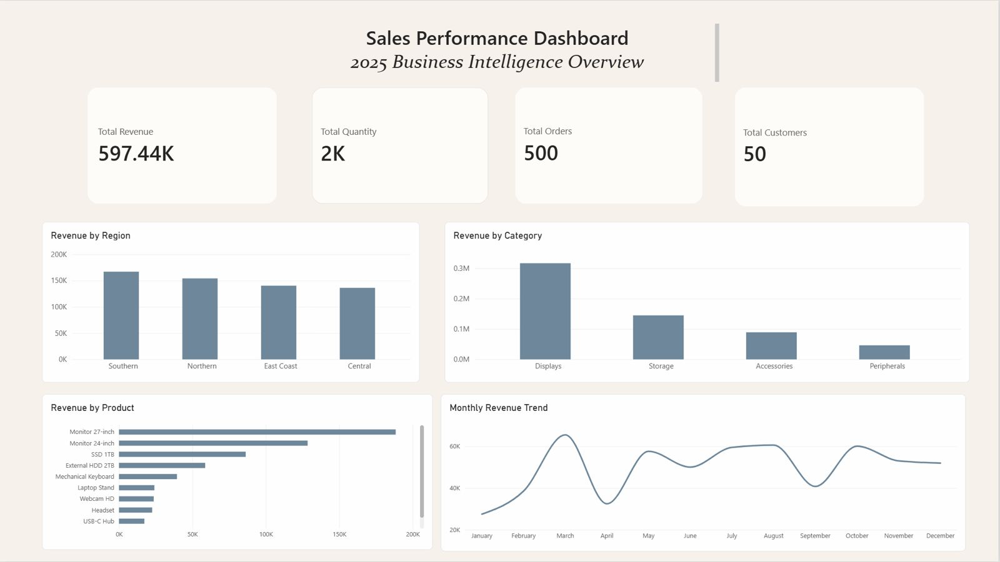
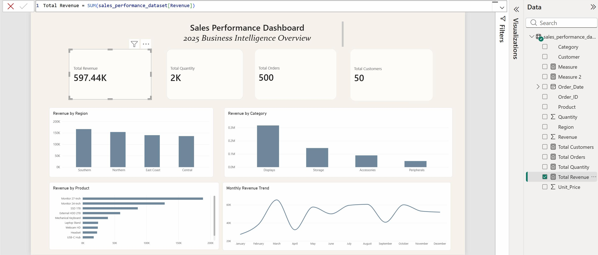

BUSINESS INTELLIGENCE PROJECT
An interactive Power BI dashboard developed to analyse sales performance, revenue trends, product performance, regional performance and customer metrics.
DASHBOARD PREVIEW

Interactive Power BI dashboard showing key sales, regional, category, product and monthly performance metrics.
PROJECT OVERVIEW
This project focuses on transforming structured sales data into an interactive Business Intelligence dashboard using Microsoft Power BI.
The dashboard provides a high-level overview of business performance through key metrics and visual analysis across regions, product categories, individual products and monthly revenue trends.
KEY FEATURES
Tracks total revenue generated across the sales dataset.
Monitors total quantity, orders and customers.
Compares revenue performance across different regions.
Analyses revenue contribution from different product categories.
Identifies products contributing the highest revenue.
Visualises revenue trends across the year.
TECHNICAL IMPLEMENTATION

DAX (Data Analysis Expressions) was used to create calculated measures for the dashboard's key performance indicators.
Total Revenue = SUM(sales_performance_dataset[Revenue])
TOOLS & TECHNOLOGIES
LEARNING OUTCOMES
FUTURE IMPROVEMENTS